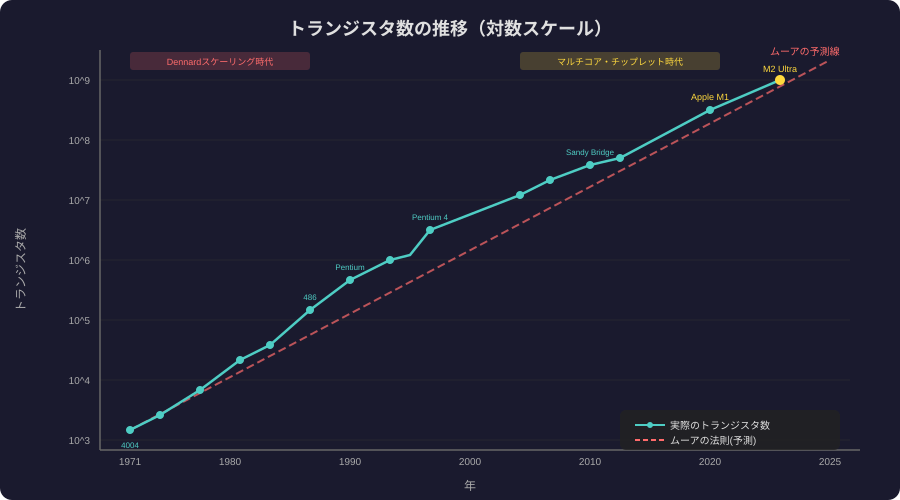

4フェーズ12章で観察が神話になる過程を追う
神話化・反例・Post-Moore時代まで網羅した後半
2年で2倍の観察が産業の目標に変わった——法則でなく預言だ
4データ点の観察が60年間の産業憲法になった
4ページの論文が半導体産業60年のロードマップを決定した
ゴードン・ムーアは予測したのではなく目標を植え付けた
信じるから達成する——予言の社会学が半導体産業を動かした
ムーアの法則はマートン理論の最大規模の実証例だ
最初の10年は純粋な観察——予言色はまだなかった重要な事実
観察期に業界が揃って法則を信じ始めたことが次の相を生んだ
観察から目標へ——IntelとIBMが法則を設計基準に採用した転換点
競合全社が同じ目標を採用することで予言が強制力を持った
15年先の技術目標を業界全体で合意—予言が制度化した瞬間
工場投資が$1Mから$20Bへ—制度化が規模を変えた
予言の圧力が物理限界への挑戦を強制した最も純粋な自己実現期
限界を破るたびに次の限界への信頼が強まる正のフィードバック

「法則」という命名が権威を与え自己実現を加速した言語の力
物理的減速後も「精神的ムーアの法則」が文化として生き続ける
AI・量子・3Dが「新ムーア」を自称——神話の継承が始まった
神話は共通の目標を作り集団行動を調整する——産業神話の効用
神話が消えると投資と人材が散逸する——意図的に維持する価値がある
スマホ・クラウド・AIはムーアの法則の副産物として生まれた
予言が産業生態系全体を設計した——意図せぬ最大の成果だ
バッテリー・量子エラー率は二乗則で改善しない——法則の射程を知れ
適用外を知ることで新しい「法則」が必要な領域が見える
予言の力は技術ではなく社会的信頼と制度化にある——これが核心
次の産業神話を作るには目標共有・制度化・信頼構築が必要だ
AI算力・量子誤り率・バッテリー密度が候補——何が定着するか
ライト則・ギルダー則も同じ構造—次の自己実現予言が動き出す
観察→目標→制度→神話の4段階が任意の「ムーア則」を作る
投資が止まれば法則が終わる—AIスケーリング則も同じ運命